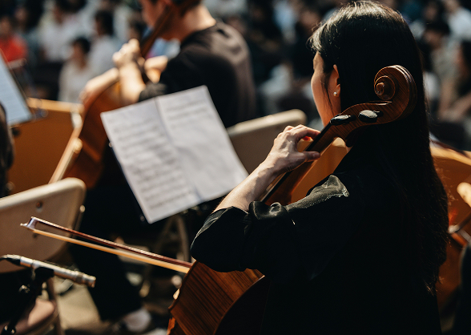
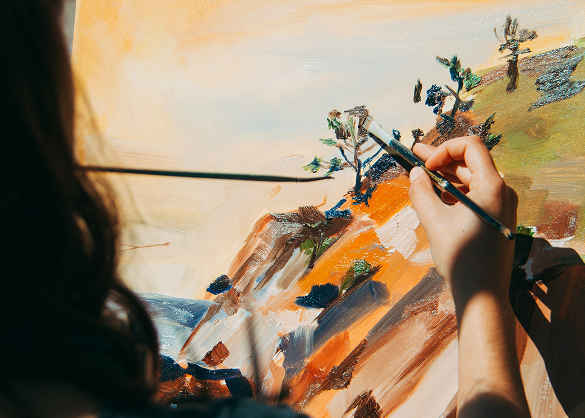

예술의 미래를 키우는 힘
금호문화재단
우리는 예술의 가치를 키우고, 젊은 예술가들이 꿈을 이룰 수 있도록 지원합니다.
Classical Music
차세대 음악 영재의 발굴과 지원
유망 음악 영재 선발과 데뷔 무대 지원
금호문화재단은 그 믿음으로 1998년부터 젊은 음악인들의 첫 걸음을 함께해왔습니다. 금호영재콘서트에서 시작된 이 여정은, 청소년과 청년 연주자들을 위한 금호영아티스트콘서트, 그리고 실내악 무대를 여는 금호영체임버콘서트로 이어졌습니다. 매년 두 차례의 오디션을 통해 선발된 이들은 매주 토요일, 금호아트홀 무대에서 꿈을 연주합니다.


Contemporary Art
미술작가 지원 사업
한국 미술계를 선도하는 작가들을 지원
금호문화재단은 한국 미술의 미래를 위해 2000년대부터 젊은 작가들의 가능성을 밝혀왔습니다. 금호영아티스트 프로그램은 새로운 시도와 시선을 주목하며, 중견과 원로 작가 전시를 통해 한국 미술문화의 폭을 넓혔습니다. 창작 스튜디오를 통한 지원으로 신진작가들은 창작에 전념할 기회를 얻었습니다.
Scholarship
금호문화재단 장학사업
인재 육성을 향한 굳은 신념
1997년 장학재단으로 출범한 금호문화재단은 설립 이후 인재 양성에 힘써왔습니다. 금호문화재단은 인재육성이 국가와 사회의 미래를 결정짓는 가장 확실한 투자라 믿습니다. 경제적 여건으로 학업을 이어가기 어려운 학생들에게 장학금을 지속적으로 지원해, 이들이 자신의 꿈을 포기하지 않고 학업에 전념하도록 돕고 있으며, 미래에 또 다른 누군가에게 희망을 전달할 수 있기를 기대합니다.